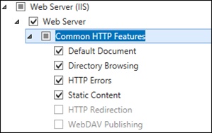
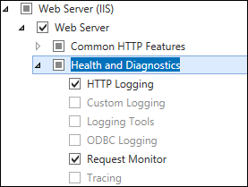
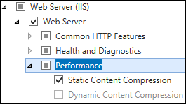
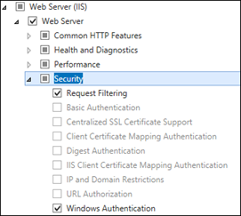
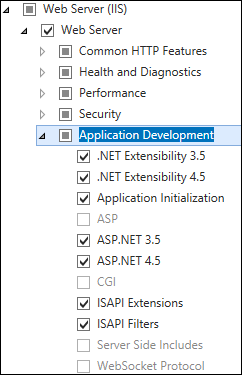
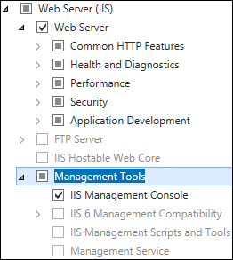

Adding Role Services
- In Server Manager, click Manage and then select Add Roles and Features to start the Add Roles and Features Wizard.
- On the Select installation type screen, select Role-based or feature-based installation.
- Select the target server.
- On the Select Roles screen, expand Web Server (IIS).
Select the following IIS Role Services to be installed:
Common HTTP Features

- Static Content - Static Content lets the Web server publish static Web file formats, such as HTML pages and image files. Use Static Content to publish files on a Web server that users can then view using a Web browser.
- Default Document - Default Document lets organizations configure a default file for the Web server to return when users do not specify a file in a URL. Default documents make it easier and more convenient for users to reach an organizations Web site.
- Directory Browsing - Directory Browsing lets users see the contents of a directory on a Web server. Use Directory Browsing to enable an automatically generated list of all directories and files available in a directory when users do not specify a file in a URL and default documents are either disabled or not configured.
- HTTP Errors - HTTP Errors lets organizations customize the error messages returned to users’ browsers when the Web server detects a fault condition. Use HTTP errors to give users a better user experience when they run up against an error message. Consider providing users with an e-mail address for staff who can help them resolve the error.
Health and Diagnostics

- HTTP Logging - HTTP Logging provides logging of Web site activity for this server. When a loggable event (usually an HTTP transaction) occurs, IIS calls the selected logging module, which then writes to one of the logs stored in the file system of the Web server. These logs are kept in addition to those provided by the operating system.
- Request Monitoring - Request Monitor provides infrastructure to monitor Web application health by capturing information about HTTP requests in an IIS worker process. Administrators and developers can use Request Monitor to understand which HTTP requests are executing in a worker process when the worker process has become unresponsive or very slow.
Performance

Static Content Compression - Static Content Compression provides infrastructure to configure HTTP compression of static content. This provides more efficient use of bandwidth. Unlike dynamic responses, compressed static responses can be cached without degrading CPU resources.
Security

- Windows Authentication - Windows Authentication is a low cost authentication solution for internal Web sites. This authentication scheme allows administrators in a Windows domain to take advantage of the domain infrastructure for authenticating users. Do not use Windows authentication if users who must be authenticated access an organizations Web site from behind firewalls and proxy servers.
- Request Filtering - Request Filtering screens all incoming requests to the server and filters these requests based on rules set by the administrator. Many malicious attacks share common characteristics, such as very long URLs, or requests for an unusual action. Filtering requests, can attempt to reduce the impact of these types of attacks.
Application Development

- ASP.NET 3.5/4.5 - ASP.NET provides a server side object-oriented programming environment for building Web sites and Web applications that use managed code. ASP.NET is not just a new version of ASP. ASP.NET provides a robust infrastructure for building Web applications, and it has been completely re-architected to provide a highly productive programming experience based on the .NET Framework.
- .NET Extensibility 3.5/4.5 - .NET Extensibility lets managed code developers change, add, and extend Web server functionality in the request pipeline, the configuration, and the UI. Developers can use the familiar ASP.NET extensibility model and rich .NET APIs to build Web server features that are just as powerful as those written using the native C++ APIs.
- ISAPI Extensions - Internet Server Application Programming Interface (ISAPI) Extensions provides support for dynamic Web content development using ISAPI extensions. An ISAPI extension runs when requested, just like any other static HTML file or dynamic ASP file. Since ISAPI applications are compiled code, they are processed much faster than ASP files or files that call COM+ components.
- ISAPI Filters - Internet Server Application Programming Interface (ISAPI) Filters provides support for Web applications that use ISAPI filters. ISAPI filters are files that can extend or change the functionality provided by IIS. An ISAPI filter reviews every request made to the Web server, until the filter finds one that it needs to process.
Management Tools

IIS Management Console - IIS Manager provides infrastructure to manage IIS by using a graphical user interface. IIS Manager can be used to manage a local or remote Web server that runs IIS.